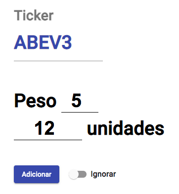
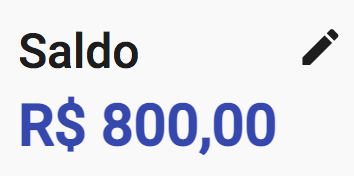
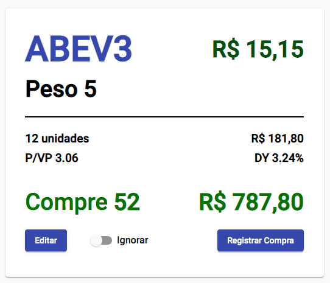

<div class="home-container">

  <mat-card class="home-card">

      <div class="title">Conheça o Aporte Fácil</div>

      

      <mat-card-content>

        <p class="sub-title">
          Somos uma forma fácil de visualizar e distribuir corretamente seus aportes entre os ativos de sua carteira.
        </p>

        <p class="steps">
          1. Faça seu login
          <br/><br/>
          <button mat-raised-button color="primary" (click)="navigateTo('/login')">
            Acesse agora mesmo!
          </button>
        </p>

        <p class="steps">
          2. Adicione seus ativos informando quantidade e peso
          <br/><br/>
          
        </p>

        <p class="steps">
          3. Informe quanto quer aportar em sua carteira
          <br/><br/>
          
        </p>

        <p class="steps">
          4. Obtenha a distribuição ideal para o melhor balanceamento
          <br/><br/>
          
        </p>

      </mat-card-content>
    </mat-card>
</div>